Mikrocomputertechnik 1
Einheit 8: I/O und Systemarchitektur
I/O und Systemarchitektur
Drei Fragen führen durch die Einheit
- Wie erreicht ein Speicherzugriff ein Gerät?
- Wie reagiert ein Programm auf ein Ereignis?
- Welcher Vertrag gilt beim Übergang zu einem Handler oder Dienst?
Ein durchgängiges Beispiel: Schalter lesen, Bit auswählen, Pixel setzen.
Was aus Einheit 1–7 weiterverwendet wird
| Vorwissen | Anwendung |
|---|---|
| Bitmasken und Vergleich | Einen Eingang aus einem Wort isolieren |
| Basisadresse und Byteoffset | Das richtige Geräteregister auswählen |
| Stack und Registerrollen | Unterbrochenen Zustand erhalten |
| Zeitdiagramme und gültige Einträge | Ereignis und bestätigte Wirkung trennen |
Drei Verträge auseinanderhalten
| Ebene | Was festgelegt wird |
|---|---|
| RISC-V-Befehlssatz | Bedeutung von Befehlen und privilegiertem Zustand |
| Plattform / Gerät | Adressen, Registerbreiten und Zugriffsnebenwirkungen |
| Ausführungsumgebung | Dienste, Parameter, Rückgaben und Registererhaltung |
1. Geräteregister über Adressen erreichen
Dieselbe Adresseingabe, verschiedene Ziele
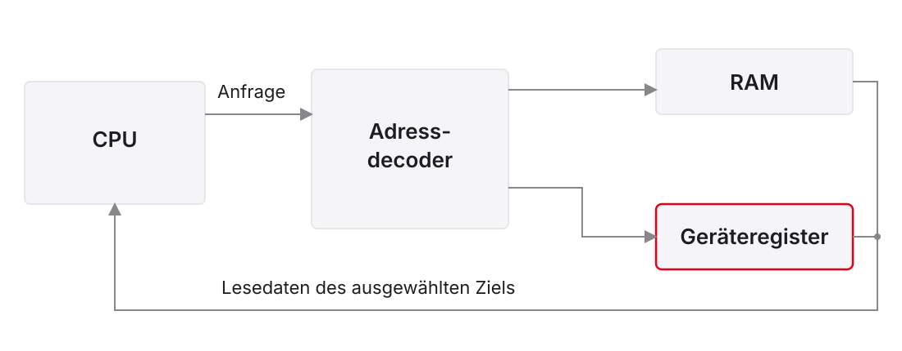
Adressraum ist nicht eingebauter Speicher
\[2^{32}\,\mathrm{Byte}=4\,\mathrm{GiB}\]
- 32-Bit-Byteadressen benennen einen möglichen Adressraum
- Welche Bereiche vorhanden sind, legt die Plattform fest
- Gerätebereiche sind keine frei verfügbaren RAM-Arrays
- Zugriffstyp, Breite und Nebenwirkung gehören zur Registerkarte
Eine Karte lesen und Adressen rechnen
Didaktischer Ausschnitt, keine universellen Ripes-Adressen:
| Bereich / Register | Adresse | Vertrag |
|---|---|---|
| Schalterwort | 0xF0000000 |
Vier aktive High-Bits, lesen |
| Pixel 0 | 0xF0000020 |
Farbwort, schreiben |
| Pixel 1 | 0xF0000024 |
Farbwort, schreiben |
| Pixel 7 | 0xF000003C |
Letzter Pixel einer Zeile mit acht Zellen |
Auswahl aus oberen Adressbits
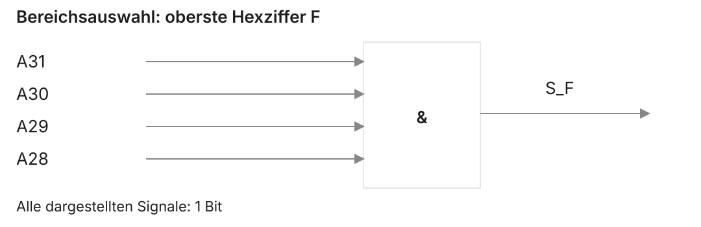
\[S_F=A_{31}\land A_{30}\land A_{29}\land A_{28}\]
Die Auswahl erkennt einen Bereich; weitere Decodierung wählt das Gerät.
Schalterwort und Bitmaske
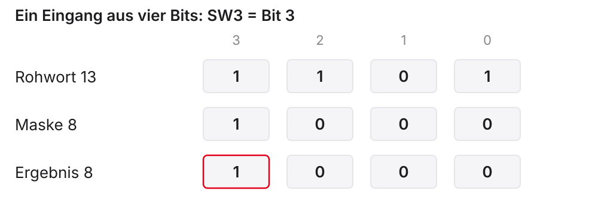
Aus Eingabebits wird ein Farbwort
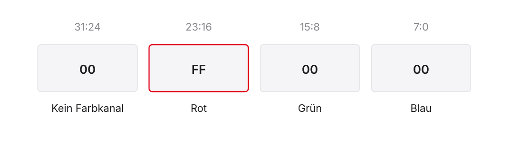
- Modellformat:
0x00RRGGBB - Rot:
0x00FF0000, Grün:0x0000FF00, Schwarz:0 - Maske 8 prüft SW3; sie ist selbst keine Farbe
Echo: Eingabe prüfen
Voraussetzung: exportierte Geräteadressen, mindestens vier Schalter.
Echo: Beide Zustände schreiben
Fortsetzung des vorherigen Ausschnitts:
Pixelindex, Bytegrenze und Lauflicht
Für acht Pixel mit Basis \(B\):
\[A_i=B+4i,\qquad 0\leq i<8\]
- Offsets: 0, 4, 8, …, 28
- Bereichsgröße: 32 Byte, nächster Offset 32 ist außerhalb
- Vorigen Pixel löschen, sonst bleibt eine Spur
- Datei:
beispiele/vl8_lauflich.s
Lesen kann einen Gerätezustand verändern
Beispiel eines Ereignisregisters:
- Taste kurz drücken und vor der Abfrage loslassen
- Gerät merkt das Ereignis
- Lesen liefert eins und löscht die gespeicherte Meldung
- Nächstes Lesen liefert ohne neues Ereignis null
Ein Pegelregister und ein Ereignisregister sind unterschiedliche Verträge.
C: Wiederholte Zugriffe sichtbar machen
Lehrausschnitt, Adresse nur unter passendem Gerätevertrag:
volatile ersetzt keinen vollständigen Hardwarevertrag
| Ebene | Benötigte Regel |
|---|---|
| Compiler | Vorgesehene Gerätezugriffe tatsächlich ausführen |
| Speicherpfad | Passende Attribute, Breiten und Ordnung |
| Gerät | Bedeutung und Nebenwirkung jedes Zugriffs |
volatile ist keine allgemeine Cache-Abschaltung, Sperre oder Speicherbarriere.
Kurzaufgabe: Adresse, Maske oder Datenwort?
Im vereinbarten Schalter-Pixel-Modell:
- Rohwort
0b0101, Maske8 - Pixelbasis
0xF0000020, Index3 - Welcher Wert wird an welche Adresse geschrieben?
- Was ändert sich bei Rohwort
0b1101?
2. Abfragen, Ereignisse und Unterbrechungen
Periodisches Polling und eine kurze Eingabe
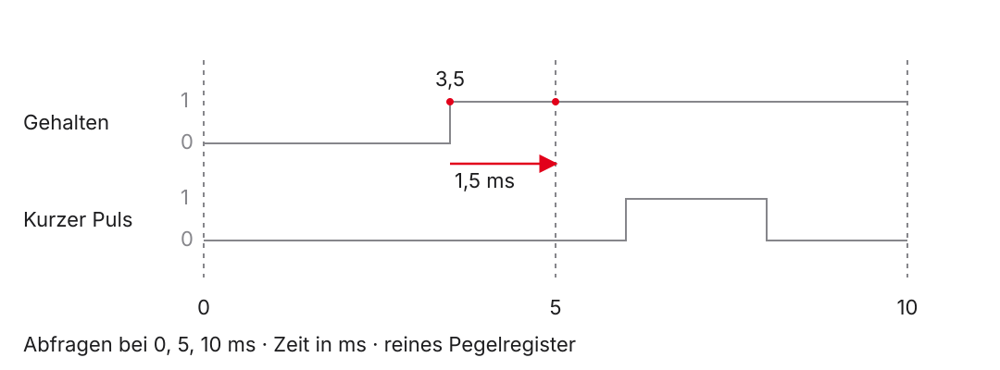
Abfragekosten und Reaktionszeit berechnen
Didaktische Annahmen:
- Alle \(5\,\mathrm{ms}\) eine Abfrage mit \(100\) Takten
- Frequenz \(10\,\mathrm{MHz}\), keine zusätzlichen Wartezeiten
\[t_\mathrm{Abfrage}=\frac{100}{10^7}\,\mathrm{s}=10\,\mathrm{\mu s}\]
\[\mathrm{Zeitanteil}=\frac{10\,\mathrm{\mu s}}{5\,\mathrm{ms}}=0{,}2\,\%\]
Ein gehaltener Druck soll nur einmal zählen
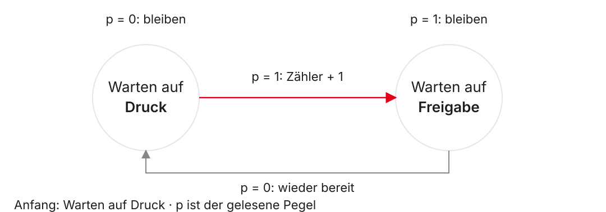
Entprellen ist eine zusätzliche Filteraufgabe
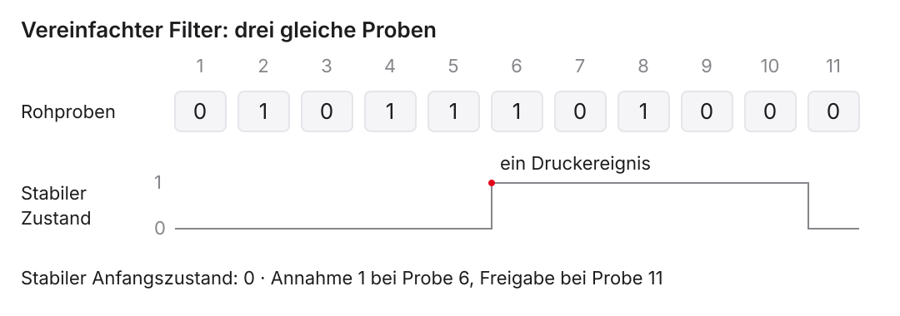
Vereinfachtes Abtastmodell: Erst drei aufeinanderfolgende gleiche Proben ändern den angenommenen stabilen Zustand.
Was eine Interrupt-Anforderung zusätzlich braucht
- Gerät oder Controller meldet eine anstehende Anforderung
- Prozessor prüft Quelle, Freigaben und Priorität
- Handler bearbeitet und gegebenenfalls quittiert die Ursache
- Zwischen Ereignis und Behandlung liegt eine Latenz
- Ein Interrupt ersetzt weder Gerätevertrag noch Entprellung
3. Traps und privilegierter Zustand
Exception und Interrupt am Befehlsstrom erkennen
| Fall | Bezug zum Programm | Beispiel |
|---|---|---|
| Exception | Auslösende Instruktion | ecall, unerlaubte Instruktion |
| Interrupt | Asynchroner Anlass | Timer- oder externe Anforderung |
| Branch / Funktionssprung | Gewöhnlicher Befehlsfluss | beq, jal |
Modellgrenzen dieses Trap-Teils
- RV32 mit Machine Mode M und User Mode U
- Traps gehen nach M, keine Delegation an einen anderen Modus
- Grundmodell:
mtvecim Direct-Modus - Gültiger ausgerichteter Stack; keine verschachtelten Traps
- Kein implementierter Interruptcontroller und kein Simulator-Handler
Privilegienstufen und Rechte
| Modus | Rolle im Kurs |
|---|---|
| M — Machine | Firmware und unser Trap-Modell |
| S — Supervisor | Einordnung größerer Betriebssysteme |
| U — User | Eingeschränkte Anwendungen |
Ein Modusname allein legt keine vollständige MMIO-Speicherschutzkarte fest.
CSRs haben einen eigenen Zugriff
| Integerregister | MMIO-Register | CSR |
|---|---|---|
x0–x31 |
Geräteadresse | CSR-Kennung |
| Rechenbefehle | Passende lw / sw |
Zicsr-Befehle |
| Programmdaten | Gerätedaten / Status | Prozessorsteuerung / Status |
Vier Register erklären den Trap-Ablauf
| Register | Benötigte Information |
|---|---|
mtvec |
Wohin geht der Handler? |
mepc |
Wo soll die Ausführung fortgesetzt werden? |
mcause |
Warum erfolgte der Übergang? |
mstatus |
Welche Freigaben und bisherigen Rechte gelten? |
mtvec: Basisadresse und Einsprungmodus
\[\mathrm{BASE}=\mathrm{mtvec}\land_{\mathrm{bit}} \mathtt{0xFFFFFFFC}\]
| Beispielwert | Modus | Einsprung |
|---|---|---|
0x00000100 |
Direct | 0x100 |
0x00000101 |
Vectored | Exception: 0x100 |
0x00000101 |
Vectored | Interrupt: Basis plus viermal Ursachencode |
mcause: Kennzeichen vor Ursachencode
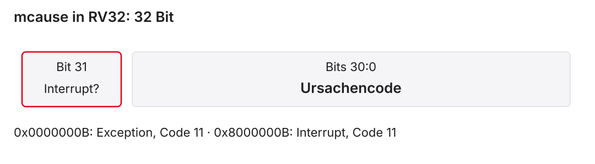
0x00000008: Environment Call aus U0x0000000B: Environment Call aus M0x8000000B: Machine External Interrupt
mepc: Fortsetzen, erneut versuchen oder überspringen?
| Anlass | Bedeutung / Behandlung |
|---|---|
| Interrupt | Gespeicherte Fortsetzungsadresse verwenden |
| Behebbarer Fehler | Auslösende Instruktion gegebenenfalls erneut versuchen |
Bewusst bearbeiteter 32-Bit-ecall |
Nach dem Dienst auf nächste Instruktion setzen |
Kein pauschales mepc += 4 für alle Traps.
mstatus: Freigabe und gespeicherter Zustand
| Feld | Bits im RV32-Grundmodell | Funktion |
|---|---|---|
| MIE | 3 | Machine-Interrupt-Freigabe |
| MPIE | 7 | Gespeicherte bisherige Freigabe |
| MPP | 12:11 | Gespeicherter bisheriger Modus |
U wird als 0, M als 3 codiert. Andere Statusfelder bleiben außerhalb der Rechnung.
Freigabebit setzen, übrigen Status erhalten
- MIE ist Bit 3, Maske acht
csrrssetzt die maskierten schreibbaren Bitscsrw mstatus, t1wäre ein ganzer Register-Schreibversuch
Wann wird ein maskierbarer M-Interrupt angenommen?
Für unser Programm, das gerade in M läuft:
\[\mathrm{Annahme}=P\land E\land\mathrm{MIE}\]
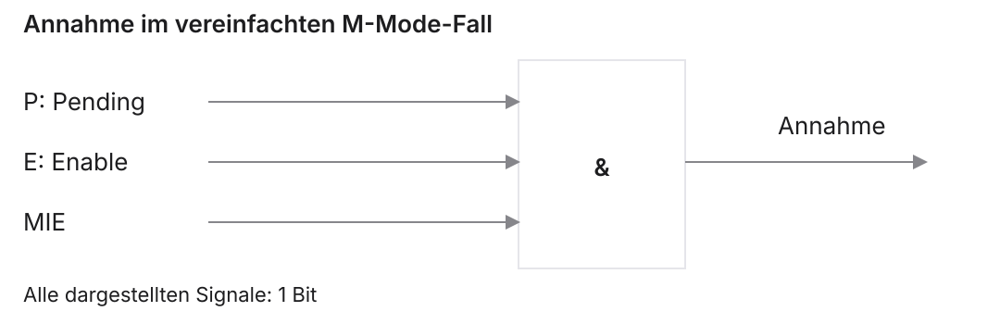
Hardwareeintritt: Was wird gespeichert?
Bei einem angenommenen Trap nach M:
- Fortsetzungs- oder Befehlsadresse nach
mepc - Art und Ursache nach
mcause - Bisheriges MIE nach MPIE, MIE auf null
- Bisheriger Modus nach MPP, aktueller Modus nach M
- Einsprung nach der
mtvec-Regel
Ein vollständiger Zustandsdurchlauf
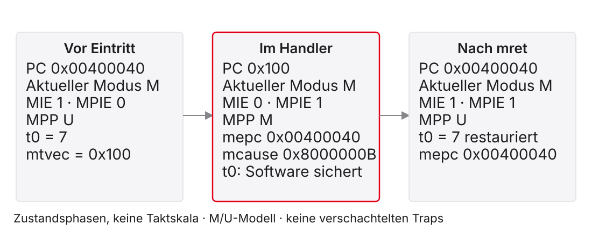
Ein Trap ist kein Branch mit fester Penalty
- Ältere bestätigte Arbeit bleibt bestehen
- Eine Exception muss zur auslösenden Instruktion passen
- Jüngere falsche Arbeit darf keine bestätigte Wirkung erhalten
- Wie viele Stufen warten oder verworfen werden, bestimmt die Umsetzung
Warum der Handler auch t-Register sichern muss
Vor dem Interrupt: t0 = 7.
Handler nutzt t0 = 99 für seine Arbeit.
Ohne Sicherung würde das unterbrochene Programm mit 99 weiterrechnen.
Ein asynchroner Eintritt ist kein vorbereiteter Funktionsaufruf.
Ein 16-Byte-Frame hält einen Registerwert
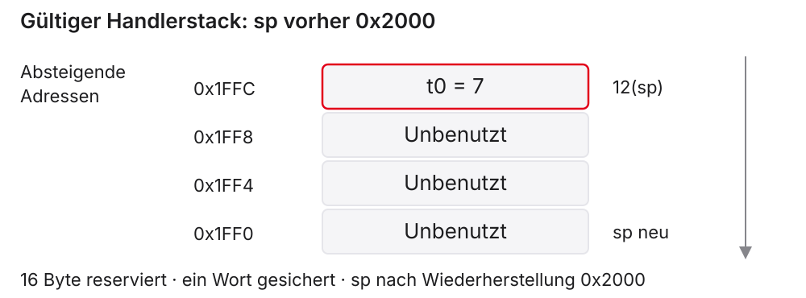
Prolog und Epilog eines isolierten Leaf-Ausschnitts
Lehrmodell: gültiger Stack, nur t0 verändert, kein Unteraufruf.
Ein Unteraufruf vergrößert die Sicherungsaufgabe
callverändertraund kann Caller-Saved-Register verändern- Unterbrochener Code hat diese Werte nicht vorher gesichert
ra,t0–t6,a0–a7: 16 Wörter, 64 Byte- Zusätzlich selbst veränderte s-Register berücksichtigen
- Bereits gesicherte Trap-Information vor Verschachtelung schützen
mret stellt mehr als eine Sprungadresse her
- Ziel aus
mepc, aktueller Modus aus MPP - MIE wird aus MPIE wiederhergestellt
- Danach MPIE auf eins, MPP auf niedrigsten unterstützten Modus
- Integerregister muss die Software vorher restauriert haben
ret verwendet dagegen den normalen Link in ra.
Kurzaufgabe: Zwei Anlässe, dieselbe Adresse
Anfang: mtvec = 0x100, relevante Befehlsadresse 0x00400040.
| Fall | mcause | Gespeicherte Adresse |
|---|---|---|
| M-Interrupt, Code 11 | 0x8000000B |
mepc = 0x00400040 |
M-ecall |
0x0000000B |
mepc = 0x00400040 |
Wie unterscheiden sich Behandlung und Rückkehrziel?
4. Dienste einer Ausführungsumgebung
ecall ist kein normaler jal-Aufruf
| Normaler Funktionsaufruf | Environment Call |
|---|---|
| Sprungziel und Link durch Aufrufbefehl | Anfrage an die Ausführungsumgebung |
ra dient als Rückkehrlink |
Trap- beziehungsweise Simulatorfortsetzung |
| Funktions-ABI | Vertrag des konkreten Diensts |
Die Dienstnummer steht nicht im operandlosen ecall-Befehl.
Venus, Ripes und Linux unterscheiden
| Umgebung | Dienstkennung | Erstes Argument |
|---|---|---|
| Venus des Kurses | a0 |
a1 |
| Ripes-Dokumentation | a7 |
a0 |
| Linux auf RISC-V | a7 |
a0 |
Gleiche Registerbelegung bedeutet nicht gleiche Dienstnummern.
Drei Venus-Dienste für die Aufgaben
| a0 | Dienst | a1 | Wirkung |
|---|---|---|---|
| 1 | Print Integer | Zahlenwert | Ganze Zahl ausgeben |
| 4 | Print String | Adresse | Nullterminierten Text ausgeben |
| 10 | Exit | Kein Argument benötigt | Programm beenden |
Ein vollständiges Hello World für Venus
EVA mit festem Eingabewert
Ausschnitt aus beispiele/vl8_eva.s, vor dem ersten Dienst:
Registererhaltung gehört zum Dienstvertrag
- Aus
ecallfolgt keine allgemeine Caller-Saved-Liste - Ein t-Register ist nicht automatisch verloren
- Ein s-Register ist nicht automatisch über jeden Dienst sicher
- Benötigte Register anhand der dokumentierten Umgebung beurteilen
- Nicht dokumentierte Erhaltung nicht als Fehlerlauf erfinden
Papierfall mit ausdrücklich vereinbartem Clobber-Vertrag
Fiktiver Dienst, kein behaupteter Venus-Vertrag:
- Darf
t0sowiea0unda1verändern - Erhält
s0,spund den benutzten Datenspeicher - Ein Zähler muss nach jeder Anfrage weiterlaufen
Welche zwei Sicherungsstrategien sind unter diesen Angaben zulässig?
5. Vorhersagen mit Werkzeugen vergleichen
Ripes: Karte vor Programm prüfen
- Version und Prozessormodell dokumentieren
- Mindestens vier Schalter und passende LED-Matrix anlegen
- Basis, Größe, Breite und Exports aus der Registerkarte lesen
- Echo mit Rohwerten 0, 5, 8 und 13 prüfen
- Für Lauflicht genau eine Zeile mit acht Pixeln verwenden
Venus: Vor jedem ecall die Argumente prüfen
- Print Integer:
a0 = 1,a1ist ein Wert - Print String:
a0 = 4,a1ist eine Adresse - Exit:
a0 = 10 lalädt eine Adresse;lwlädt deren Daten- Eintrittsmarke und Nullterminator gehören zum Programm
Selbstkontrolle und Übergang zur Übung
Transfer: Zweibit-Anzeige, Vierprobenfilter und Messwert \(3n-4\).
- Wie unterscheiden sich Pegel, Ereignis und entprellter Zustand?
- Welche Trap-Daten und Register muss der Handler erhalten?
- Welcher Dienstvertrag bestimmt Ausgabe und Registererhaltung?